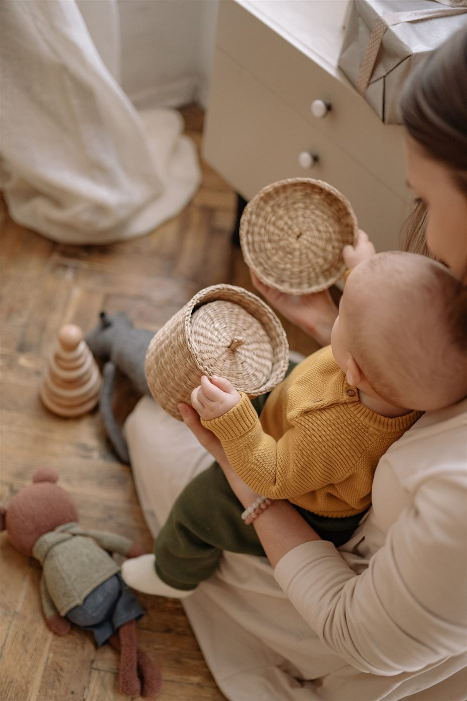
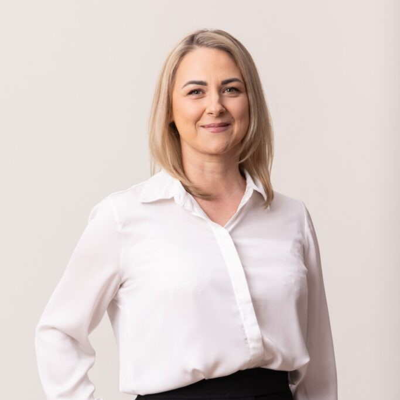
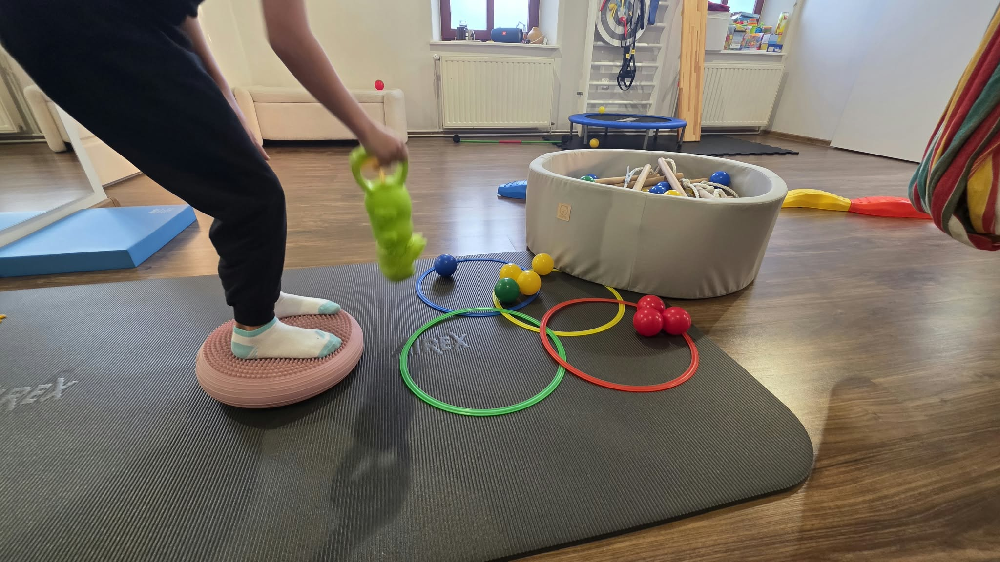
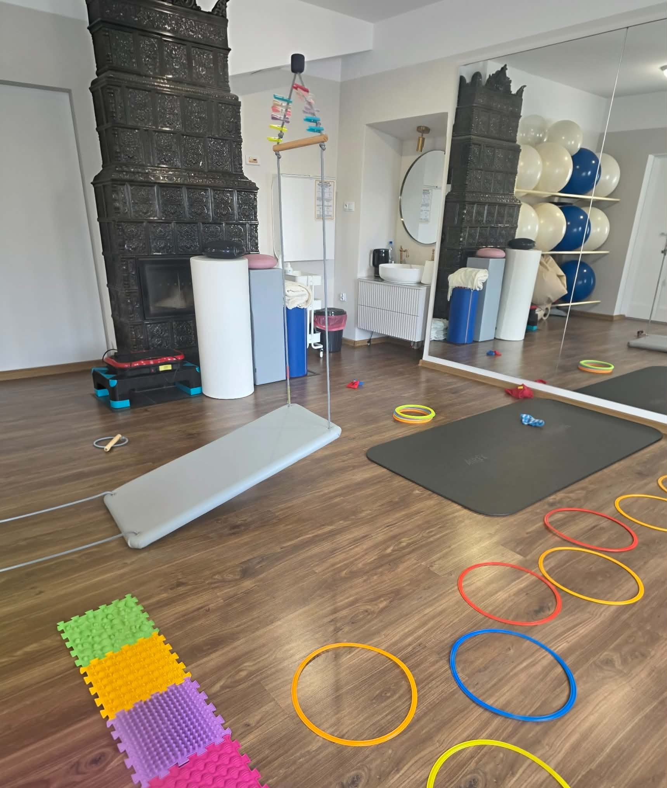
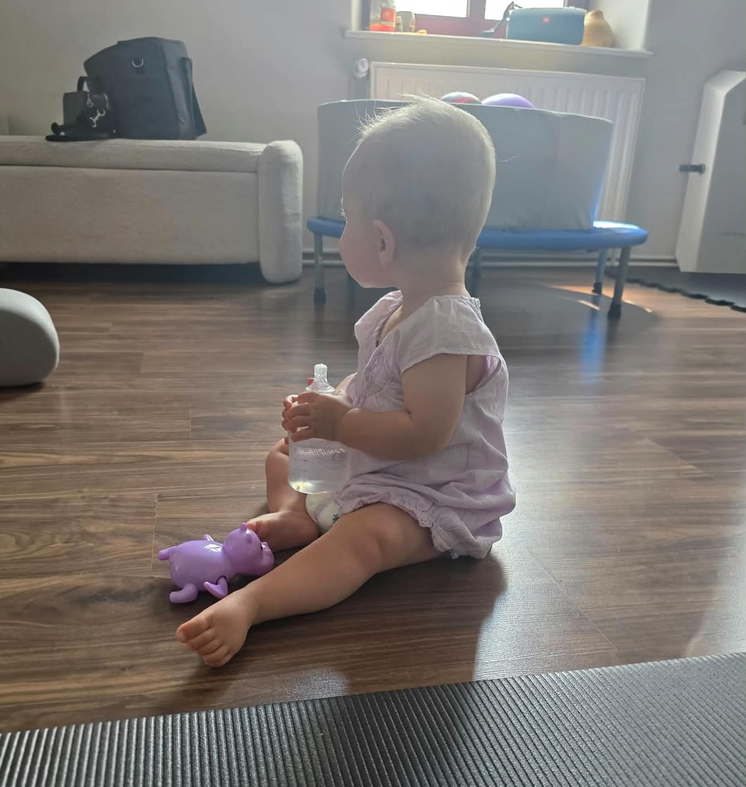
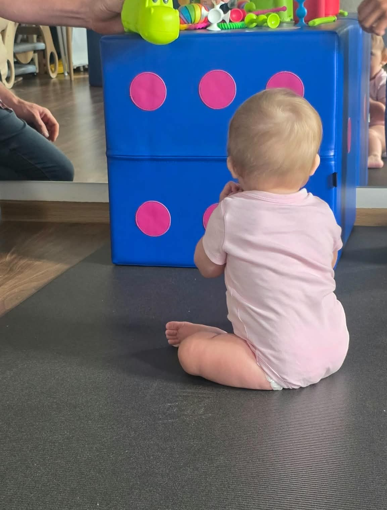
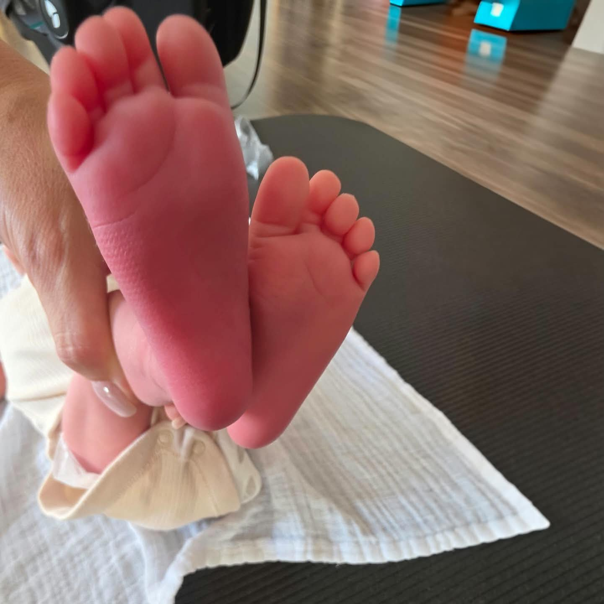

Niemowlęta
- asymetria ułożeniowa
- niechęć do leżenia na brzuszku
- opóźniony rozwój ruchowy
- prężenie się i odginanie główki do tyłu
- problemy z ssaniem lub karmieniem
- niepokój przy zmianie pozycji

Nowoczesna fizjoterapia dziecięca i niemowlęca w bezpiecznej, przyjaznej atmosferze. Indywidualnie dobieram terapię do potrzeb każdego dziecka.

Justyna Wysogląd
Fizjoterapeutka dziecięca
O mnie
Justyna Wysogląd
Jestem fizjoterapeutką dziecięcą z pasją do pomagania najmłodszym. Przez 15 lat pomogłam ponad 2500 dzieciom w prawidłowym rozwoju ruchowym.
W gabinecie najważniejsze jest poczucie bezpieczeństwa — zarówno malucha, jak i zatroskanego rodzica. Każde dziecko to osobna historia, dlatego terapię zawsze dobieram indywidualnie, często ukrywając ją pod postacią wesołej zabawy.
Każde dziecko jest inne — terapię dopasowuję do jego potrzeb.
Delikatne techniki dostosowane do wieku i możliwości dziecka.
Pokazuję rodzicom, jak wspierać terapię również w domu.
Kiedy skonsultować
Rodzicu — jeśli zauważasz niepokojące objawy w rozwoju ruchowym dziecka, warto skonsultować je ze specjalistą. Wczesna ocena pozwala lepiej dopasować dalsze postępowanie.
Metody
Dobieram metody indywidualnie do wieku, potrzeb i możliwości dziecka.
Wsparcie prawidłowego przetwarzania bodźców sensorycznych, koncentracji i koordynacji.
Integracja Sensoryczna to naturalny proces, w którym nasz mózg odbiera informacje zmysłowe z ciała i otoczenia, porządkuje je, łączy ze sobą i wykorzystuje do skutecznego działania.
Metoda neurorozwojowa wspierająca rozwój ruchowy i pracę nad napięciem mięśniowym.
Podejście neurorozwojowe oparte na obserwacji i delikatnym towarzyszeniu dziecku w ruchu. Wspiera pracę nad napięciem mięśniowym, asymetrią i kolejnymi kamieniami milowymi rozwoju.
Trójpłaszczyznowe podejście do korekcji wad stóp i wspierania prawidłowej postawy.
Pracujemy nad stawami i mięśniami stóp w trzech płaszczyznach. Metoda wspiera prawidłowy wzorzec stania i chodu, pomagając m.in. przy płaskostopiu, koślawości stóp i chodzeniu na palcach.
Specjalistyczne oklejanie wspierające terapię i wzorce ruchowe.
Metoda wykorzystywana jako wsparcie terapii. Dyskretne oklejenie sprzyja prawidłowej pracy mięśni i stawów oraz lepszemu wzorcowi ruchowemu.
Delikatna i specjalistyczna terapia manualna dla dzieci, która usuwa napięcia w ciele i wspiera ich prawidłowy rozwój ruchowy.
Delikatna i całkowicie bezpieczna metoda fizjoterapii stworzona specjalnie dla niemowląt i dzieci przez Pastora Ponsa. Pomaga łagodnie usunąć napięcia w ciele malucha, poprawiając jego komfort, jakość snu oraz prawidłowy rozwój ruchowy.
Dlaczego FIZJOKIDS
Przestrzeń, w której maluch czuje się swobodnie, a rodzic może spokojnie obserwować terapię.
Każda terapia jest szyta na miarę — dostosowana do dziecka, jego wieku i możliwości.
15 lat pracy i ponad 2500 dzieci w terapii — wiem, jak wspierać rozwój krok po kroku.
Zawsze dowiesz się, jak wspierać terapię w domu i na co zwracać uwagę na co dzień.
Galeria





Dla rodziców
Rodzice często zastanawiają się, jak przygotować dziecko. Oto najważniejsze rzeczy.
Zabierz książeczkę zdrowia dziecka z najważniejszymi wpisami.
Najlepiej takie, które nie krępuje ruchów.
Znajomy przedmiot może pomóc dziecku poczuć się bezpieczniej.
Jeśli posiadasz wyniki badań lub opinie innych specjalistów, zabierz je ze sobą.
FAQ
Warto rozważyć konsultację, gdy zauważysz u niemowlęcia asymetrię ułożeniową, niechęć do leżenia na brzuszku, prężenie się i odginanie główki do tyłu, niesymetryczne ruchy rączek i nóżek, problemy z ssaniem lub karmieniem albo niepokój przy zmianie pozycji. Każde dziecko rozwija się we własnym tempie, dlatego ocena specjalisty pomaga dopasować dalsze postępowanie.
Nie. Fizjoterapia dziecięca opiera się na delikatnych, przystosowanych do wieku technikach. Terapia jest prowadzona w formie zabawy i ma być dla dziecka komfortowa. W trakcie każdej wizyty możesz zgłaszać swoje uwagi i pytania.
Pierwsza wizyta zaczyna się od rozmowy z rodzicem i analizy książeczki zdrowia dziecka oraz jego obserwacji. Później wykonuję badanie i ocenę rozwoju ruchowego. Na końcu omawiamy wnioski oraz indywidualny plan terapii i ewentualne zalecenia do pracy w domu.
Konsultacja trwa 60 minut, a wizyta terapeutyczna 45 minut. Dokładny czas trwania zależy jednak od potrzeb i możliwości dziecka.
Tak. Obecność rodzica jest w pełni wskazana. Współpraca z rodzicem to część terapii — podczas wizyty pokazuję ćwiczenia i wspieram rodzica w tym, jak towarzyszyć dziecku w codziennych aktywnościach.
Zabierz książeczkę zdrowia dziecka oraz ewentualną dokumentację i opinie od innych specjalistów. Ubierz malucha wygodnie, tak aby jego ruchy były swobodne. Możesz też wziąć ulubioną zabawkę, która pomoże dziecku poczuć się bezpiecznie.
Tak. Ocena i terapia obejmują m.in. skoliozy, plecy okrągłe, płaskostopie, koślawość stóp, chodzenie na palcach i nieprawidłowy wzorzec chodu.
Tak. Terapia niemowląt to specjalistyczny obszar mojej pracy. Wspieram rozwój ruchowy najmłodszych, pracuję m.in. nad asymetrią ułożeniową, napięciem mięśniowym oraz problemami z karmieniem.
Tak. Asymetria ułożeniowa to jedno z częstszych wyzwań, z którymi zgłaszają się rodzice niemowląt. Wczesna ocena i odpowiednio dobrana terapia wspierają dalszy rozwój motoryczny dziecka.
Tak. Prowadzę terapię integracji sensorycznej dla dzieci w wieku 3–12 lat. Wspiera ona prawidłowe przetwarzanie bodźców sensorycznych, koncentrację i koordynację.
Kontakt
Masz pytania lub chcesz skonsultować rozwój swojego dziecka? Skontaktuj się ze mną.
Telefon
+48 604 942 795
trycha84@interia.pl
Adres
Tadeusza Kościuszki 250, Chocznia
Godziny
Pon–Pt: 9:00–18:00
Sobota: 9:00–14:00
Wypełnij formularz, a odpowiem najszybciej, jak to możliwe.
ul. Tadeusza Kościuszki 250, Chocznia
Otwórz mapęStrona stworzona przez Rework Agency